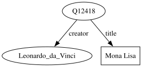
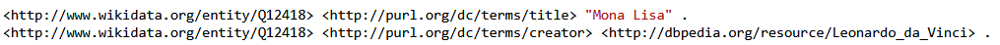
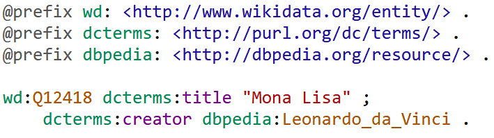
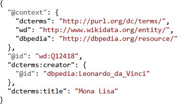

Semantic Data Integration with RDF
There are more things in heaven and earth, Horatio, than are dreamt of in your philosophy
William Shakespeare, Hamlet
All models are wrong, but some are useful
George E. P. Box
The map is not the territory
Alfred Korzybski
Agenda
we cover:
- the RDF data model
- semantics
- the stack
- converting tables to RDF
- converting trees to RDF
Agenda
we skip:
-
politics (people, governance)
-
architecture
- nothing special about RDF
- RDF embraces the web
people and architecture are important but we focus on domain modeling
History
a web of data (Tim Berners Lee)
... it's still RDF
The RDF Data Model
Resource Description Framework
elementary facts expressed as triples:
subject - predicate - object
Giacomo - lives in - Bologna
it's a graph data model
Semantics
A linguistic expression denotes something real
-
The philosopher:
Ontology captures reality
The cognitive scientist:
Reality in people's mind
The mathematician:
Let's use sets
Data Integration
destructure your data into triples and merge themIdentifiers
Resources are identified by:
- URIs (Uniform Resource Identifiers)
- actually IRIs (Internationalized Resource Identifiers)
- better if URLs (Uniform Resource Locators)
The stack
W3C standards- data model (RDF)
- serialization (N-Triples, Turtle, JSON-LD, RDF/XML)
- query (SPARQL)
- vocabularies (SKOS)
- ontologies (RDFS, OWL)
- validation (SHACL shapes)
- mappings (CSVW, R2RML)
The stack - serialization


N-Triples

Turtle

JSON-LD
😱
RDF/XML
The stack - query language
SPARQL (a bit like SQL and Cypher)
query language and protocol
federated queries
Example: Female Astronauts ordered by age
The stack - schema languages
RDF can be used schemaless
RDF is self-descriptive
:p1 rdf:type :Person. :p1 :name "Pat".
:Person rdf:type rdfs:Class. :name rdf:type rdf:Property.
:Person rdfs:comment "A (non-fictional) person" .
:Person rdfs:subClassOf :Mortal.
:name rdfs:subPropertyOf :label.
:name rdfs:domain :Person. :name rdfs:range xsd:string.
The stack - schema languages
SHACL for data shapes (validation)
RDFS and OWL for ontological reasoning
SHACL is about the data, RDFS/OWL is about the meaning
Open World Assumption
Each person has exactly one birth place
:p1 rdf:type :Person .
:p2 rdf:type :Person ; :birthPlace :NewYork .
:p3 rdf:type :Person ; :birthPlace :NewYork , wd:Q60 .
- In SHACL (closed world) only :p2 is valid.
- In OWL (open world):
- :p1 is also acceptable
- :p3 implies :NewYork owl:sameAs wd:Q60
The stack - ... and much more
SKOS (controlled vocabularies, thesauri)
mapping languages
rule languages
Mapping Tables
| ID (PK) | name | category |
| p1 | foo | c1 |
| p2 | bar | c2 |
p1 name foo
:p1 rdf:type :Product .
:p1 :name "foo" .
:p1 :category :c1 .
:p2 rdf:type :Product .
:p2 :name "bar" .
:p2 :category :c2 .
Mapping Tables
| ID (PK) | name | parent |
| c1 | wine | c2 |
| c2 | food | (NULL) |
:c1 rdf:type :Category .
:c1 :name "wine" .
:c1 :parent :c2 .
:c2 rdf:type :Category .
:c2 :name "food" .
# what about parent?
Mapping Trees
(a tree is a graph)
JSON
{
"product": "p1",
"UK": {
"price": 25,
"validFrom": "2024-01-01",
"validTo": "2025-01-01"
},
"US": {
"price": 29,
"validFrom": "2024-01-01",
"validTo": "2025-01-01"
}
}
Turtle
[
:product :p1 ;
:uk [
:price 25 ;
:validFrom "2023-01-01" ;
:validTo "2026-01-01" ;
] ;
:us [
:price 29 ;
:validFrom "2024-01-01" ;
:validTo "2025-01-01" ;
]
] .
Blank nodes
[
:product :p1 ;
:uk [
:price 25 ;
:validFrom "2023-01-01" ;
:validTo "2026-01-01" ;
] ;
:us [
:price 29 ;
:validFrom "2024-01-01" ;
:validTo "2025-01-01" ;
]
] .
_:b1 :product :p1 .
_:b1 :uk _:b2 .
_:b2 :price 25 .
_:b2 :validFrom "2023-01-01" .
_:b2 :validTo "2026-01-01" .
_:b1 :us _:b3 .
_:b3 :price 29 .
_:b3 :validFrom "2024-01-01" .
_:b3 :validTo "2025-01-01" .
Merging all

The semantic web is the future... and always will be